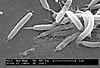

helicobacter

Definition: Helicobacter is a genus of Gram-negative bacteria possessing a characteristic helical shape. They were initially considered to be members of the genus Campylobacter, but in 1989, Goodwin et al. published sufficient reasons to justify the new genus name Helicobacter. The genus Helicobacter contains about 35 species.Some species have been found living in the lining of the upper gastrointestinal tract, as well as the liver of mammals and some birds. The most widely known species of the genus is H. pylori, which infects up to 50% of the human population. It also serves as the type species of the genus. Some strains of this bacterium are pathogenic to humans, as they are strongly associated with peptic ulcers, chronic gastritis, duodenitis, and stomach cancer.
Source: Wikipedia
Wikipedia Page (Something wrong with this association? Let us know.)
Wikidata Page (Something wrong with this association? Let us know.)